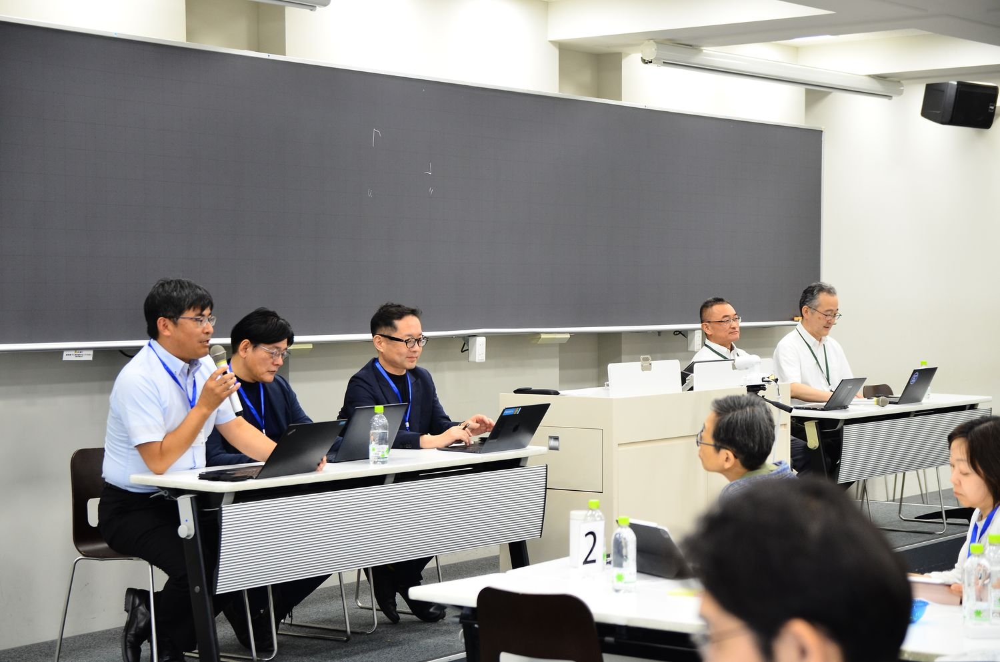
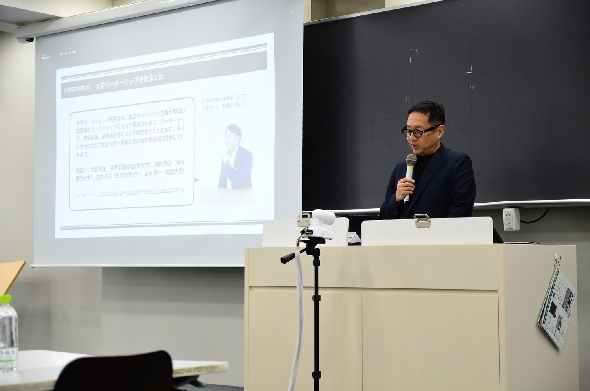
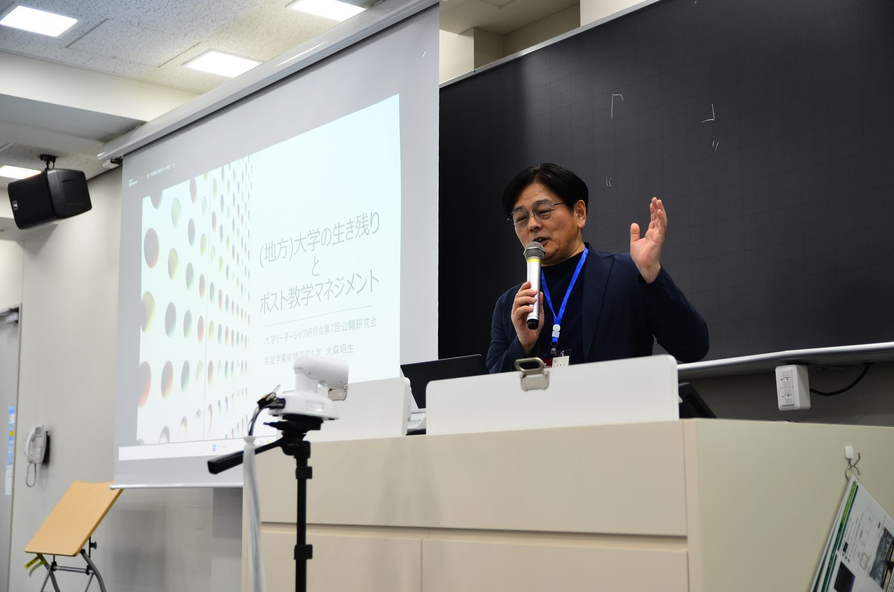
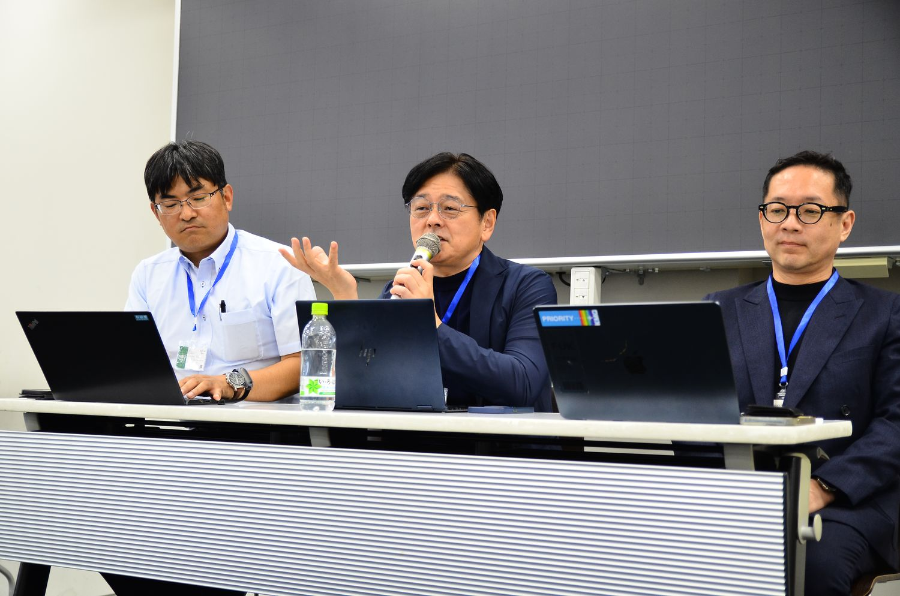
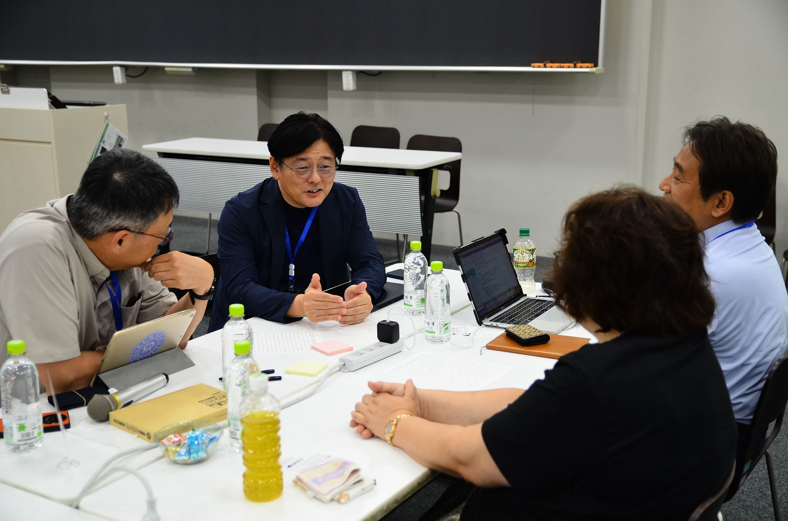

大学の生き残りとポスト教学マネジメント深化と探索を加速する、ミドル教職員の役割を再考する
変化する高等教育環境における大学組織のあり方について、「教マネを回すだけでは生き残れない」という問題意識から、深化と探索を両立させるダイナミックな教学マネジメントと、それを担うミドル教職員の役割を議論しました。
MEDIA『教育学術新聞』2025年8月20日付（第3017号 8面）で紹介されました。紙面を見る（PDF）



開催概要
| 日時 | 2025年7月12日（土） |
|---|---|
| 会場 | 芝浦工業大学 豊洲キャンパス |
| 主催 | 大学リーダーシップ研究会 |
| 共催 | 理工学教育共同利用拠点（芝浦工業大学 教育イノベーション推進センター） |
| 参加者 | 68名（一般参加59名／主催・事務局9名） |
参加者数は、研究会が保有する第1〜9回の統合参加者データ（v13）にもとづく集計です。申込記録を基礎としているため、当日の実数とは若干の差がありえます。
登壇者とプログラム
- 基調講演大森 昭生共愛学園前橋国際大学 学長「(地方)大学の生き残りとポスト教学マネジメント」
- キーワード解説山本 啓一北陸大学 経済経営学部 教授「ダイナミックな教学マネジメントとは何か？」
- 事例報告鈴木 洋芝浦工業大学 情報システム部 部長／SDコーディネーター
- 事例報告榊原 暢久芝浦工業大学 教育イノベーション推進センター長
- パネルディスカッション大森 昭生・山本 啓一・榊原 暢久・鈴木 洋進行：吉村 充功（日本文理大学）
- グループ対話ワーク成田 秀夫（進行）桐蔭横浜大学「「私の大学は？」「私の大学の“ミドル”は？」」
開催報告
以下は、当日の発言録をもとに、各登壇者の発言の要旨をまとめたものです。引用部分は発言録からの抜粋です。
趣旨説明
山本 啓一（北陸大学）

開会にあたり、山本が研究会のこれまでと今回の趣旨を説明しました。研究会は過去3年間、科研費の助成を受けて、ミドルの役割をテーマに公開研究会を開いてきました。山本はそこから見えてきたキーワードとして、学生本位の教育ビジョン、ビジョンを学内に広げ授業のレベルまで展開する教学マネジメント、ミドルリーダーシップ、対話と協働の四つを挙げました。学位プログラムの責任者である学部長は任期が短く権限も小さいにもかかわらず、学部長向けのFDはこれまで欠けていたのではないかとも述べました。新たに採択された科研費では、教学マネジメントと大学の生き残りを切り離さずに考え、静的なマネジメントではない「ダイナミックな教学マネジメント」に着目すると説明しました。
やっぱりスタティックな、静的なマネジメントではなくて、ダイナミックなマネジメントというところに着目をしていきたいというふうに思って
山本 啓一
基調講演 大森 昭生
共愛学園前橋国際大学 学長「(地方)大学の生き残りとポスト教学マネジメント」

大森学長は、教学マネジメントにきちんと取り組んでいても学生募集が厳しいことはあり、教学マネジメントだけで大学は生き残れるのかという問いを出発点にしました。認証評価のために書類と議事録を回すだけでは学生募集と結びつかないと指摘し、一つの場所で回し続けるのではなく前に進む教学マネジメントの例を三つ挙げました。一つ目は「映える」カリキュラムです。共愛学園前橋国際大学では、コースの違う初対面の学生5人ほどがチームを組み、専門の違う教員3人がチームで教える授業で、レゴで作った理想のまちとデータで見た現状とを比べて地域の課題を設定しています。大森学長は、学生がどこで誰と何を学び、DPに照らしてどんな力がついたかを語ることも情報公表であり、キャリアや広報の部署も教学マネジメントに加わる必要があると述べました。
二つ目は、教学マネジメントのサイクルを螺旋状に上げていくことです。同大学では、地域や海外に出るPBL型の授業を一つも受けずに卒業する学生がいるとわかり、最低1〜2科目の履修を卒業要件にしました。「12の力」を身につけるための学部共通科目は約40単位から60単位に増え、専門科目は60単位から40単位に減りました。元のカリキュラムの検証で見えた課題をもとにした改定です。三つ目は地域における大学連携です。大森学長は、18歳人口の減少により今の規模のまますべての大学が残ることはできないとし、山梨大学と山梨県立大学の連携推進法人の例を紹介しました。連携が進めば、他大学の授業を自大学のDPに位置づける、より高度な教学マネジメントが求められると述べました。
深めていく、充実したものにしていくのも、教マネの重要な役割ですけど、前に進めていくのも、やっぱり教マネの重要な役割なのかなと。
大森 昭生
キーワード解説 山本 啓一
北陸大学 経済経営学部 教授「ダイナミックな教学マネジメントとは何か？」
山本は、研究では競争していても、教育では大学どうしが協力したほうが地域の教育力が上がると述べました。地方の小規模大学にとって生き残りは切実な課題ですが、山本は、新学部の設置や募集広報に全力をかけるやり方には限界があるとし、教学マネジメントの体制を整えることと変化を起こすことをどう両立させるかを問いとしました。そのうえで、教学マネジメントを出来上がった制度としてではなく、実践を通じて常に作っていくものとして捉え直すことを提案しました。昨年までの研究会で示したリーダーシップとマネジメントに加え、今年からはPDCAサイクルによる質の向上である「深化」と、新しいものを取り入れる「探索」をキーワードに掲げました。
山本は、経営学の四つのフレームワークを示しました。①マネジメントとリーダーシップの統合、②深化と探索を両立させる両利きの経営、③非公式ネットワークの活用、④組織開発による組織文化の刷新です。③について山本は、誰に相談すれば話が通るかを知っている職員を例に挙げ、そうした人のつながりもダイナミックな教学マネジメントを支えるリーダーシップの一つの形だと述べました。④については、一人ひとりの能力を高めるFD・SDに加え、組織としての力を高めるFD・SDがこれから必要になるのではないかと述べました。ミドルの役割として、トップの考えを現場に翻訳し媒介すること（深化）と、他部署や学外との間を越境して新しいものを見つけること（探索）を挙げました。
教学マネジメントというのは、こうポンチ絵を書くことがゴールでもないし、書類をこの会議からこの会議に渡していくことでもないし、やっぱり実践だと。で、実践をしていく中で、必然的に変化が生まれていって、それが生き残りにつながっていくんだっていうようなイメージで
山本 啓一
事例報告1 鈴木 洋
芝浦工業大学 情報システム部 部長／SDコーディネーター
鈴木部長は技術職として入職し、教育イノベーション推進センターでSDコーディネーターを務めた後、2023年に情報システムの部門と同センターを統合した部署に移りました。芝浦工業大学は学内のシステムを自前で開発しており、DPとすべての授業科目を関連づけたカリキュラムデータベースを整え、DPごとに単位数や成績を集計できるようにしています。授業評価アンケートは廃止し、シラバスの到達目標をどの程度達成したかを学生が振り返る自己評価型に切り替えました。鈴木部長は、12年続けて選定されている私立大学等改革総合支援事業も、改革の方向を確かめる材料として学内に説明していると述べました。
事例報告2 榊原 暢久
芝浦工業大学 教育イノベーション推進センター長
榊原センター長は、センターのカリキュラムマネジメント部門で進めてきた作業を報告しました。まず、DPを細かくしたMDPにすべての科目を紐づけ、Webシラバスに記載しました。2021年度からはカリキュラムの整合性の確認に本格的に取り組み、科目の到達目標や卒業研究のルーブリックとMDPとの対応を順に確かめ、今年度は主要授業科目の要件を定めました。センターは支援者の立場に徹して学科に指示を出さず、問いを投げて学科の中で話し合ってもらいます。各学科の自己点検評価書や問いへの回答は、他の学科も見られます。榊原センター長は、こうした準備があれば、課程制の導入などでより完成度の高いカリキュラムを作りやすくなると述べました。
まず紐付けがされていないとその次の話ができないので、紐付けをしましょうという話をして、すべての学科にそれをお願いをしました。
榊原 暢久
パネルディスカッション
進行：吉村 充功／登壇：大森 昭生・山本 啓一・榊原 暢久・鈴木 洋

大森学長は、芝浦工業大学では二人の部署が学部を支えながら教学マネジメントを進めており、学部に「これをやりなさい」ではなく「これはどうなっていますか」と問いかける姿勢が参考になったと述べました。山本は、榊原センター長の資料にある内部質保証の体制図に教育イノベーション推進センターが描かれていないことを指摘し、図に表れない実践が教学マネジメントを動かしていることがわかったと述べました。榊原センター長は、方針はすべて学部長・研究科長会議に諮って決めるため、図に描かれないほうがセンターにとってはやりやすいと答えました。生き残りとの関係を問われると、榊原センター長は分野横断の学びを求める国の問いに応えて工学部の課程制を始めたことを、鈴木部長は新しいことに挑戦し続けることそのものを挙げました。
仕事を減らす改革について問われた鈴木部長は、授業評価アンケートの廃止は他大学の例を参考に、理由を説明して学内の理解を得たと答えました。榊原センター長は、コロナ禍を機に、丸1日かけていた新任教職員研修を動画13本の事前視聴と2時間半ほどの対面研修に改めたと述べました。山本は、芝浦工業大学の取組は学外の事例を探索したうえで自大学の論理から組み立てたものであり、深化の前提に探索があると述べました。大森学長は、教員・職員にパートや委託の職員も加わるスタッフ会議を最も大事な会議体にしていることを挙げ、小さな規模を生かしてきたと述べました。最後に鈴木部長は、工学部の改組を機に教授会を年4回に減らし、金曜日の午後に授業を入れられるようにしたことを紹介しました。
外の世界のいろんなことを探索されて、情報をいろんなことを知っていく中で、うちはこれが必要だというシナリオを立てていくんで、多分、その深化の前提に探索があるんだなというのは感じます
山本 啓一
グループ対話と質疑応答
進行：成田 秀夫

参加者はテーブルごとに話し合い、二つのグループが報告しました。一つ目のグループは、教学マネジメントが生き残りの前提であるとしたうえで、芝浦工業大学で学部・学科を越えて教職員が連携し、言葉が共有されていることに関心が集まったと報告しました。テーブルの4大学のうち、他大学と連携しているのは1校、ある程度連携しているのが1校で、県や市、高校と協定を結んでいても具体的な連携には至っていないという報告もありました。二つ目のグループは4名中3名が看護学科に所属していました。授業評価アンケートの廃止と年4回の教授会に関心が集まったこと、規定の厳しい看護師養成のカリキュラムをどう「映える」ものにするかに悩んでいることが報告されました。
質疑応答では、DPの重みと成績を掛け合わせた数値でDPの達成度を示してよいのかという質問がありました。榊原センター長は、科目の按分や100%表示の是非を学内で議論したうえで取りやめ、紐付けや評価の妥当性に疑問が残る段階では、まず見えるようにすることを優先したと答えました。センター設立の経緯を問われると、学長室のトップダウンで設けられ、部門は必要に応じて置いたり廃止したりしており、設立時の部門で残っているのはIR部門とFD・SD推進部門だけだと説明しました。改革総合支援事業への取組の始まりを問われた鈴木部長は、卒業時アンケートの回答状況を研究室ごとに教員どうしが見られるようにした例を挙げ、当時の学長が職員と一緒に取り組む姿勢をとっていたことにも触れました。
参加者アンケートから
教学マネジメントと大学の生き残りを切り離さずに論じたことへの評価が中心です。学内で説明する糸口を得たという趣旨の記述が複数あり、職員主導で動かざるを得ない大学からの記述も目立ちます。
| 研究会全体の満足度 | 4.69 | |
|---|---|---|
| 基調講演 大森 昭生 | 4.71 | |
| キーワード報告 山本 啓一 | 4.71 | |
| 芝浦工大事例報告 | 4.74 | |
| パネルディスカッション | 4.54 | |
| フロア討議 | 4.31 | |
| 仕事との関連性・有用性 | 4.61 |
- やらされ感の漂う「教学マネジメント」は生き残りや学生募集と切り離すことができないという漠然とした思いを抱いてきましたが、説得力をもって学内で説明できる糸口を発見できました。（大学教員・副学長／学部長）
- 自大学で出来ていることと出来ていないことが可視化されたこと。（大学職員）
- 全国の同じ志や課題意識をもつ方々と知り合うことが出来て、大変有意義な時間でした。（大学教員・学部長）
参加者アンケートの回答は36件（回答率52.9%）です。満足度は5段階で、数値が大きいほど高い評価を示します。
資料
- 配布資料参加者向けに共有しています（掲載準備中）
- 発言録参加者向けに共有しています（掲載準備中）
- アンケート結果参加者向けに共有しています（掲載準備中）
本研究会はJSPS科研費 基盤研究(C)「ダイナミックな教学マネジメント体制の構築〜ミドル教職員の育成と組織開発に向けて」（研究代表者：山本啓一）の助成を受けて開催しました。